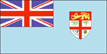

{kind=link}


![[Country map of Fiji]](../maps/fj-map.jpg)
| Fiji |  |
|
| | |
| Introduction |
Background: Fiji became independent in 1970, after nearly a century as a British colony. Democratic rule was interrupted by two military coups in 1987, caused by concern over a government perceived as dominated by the Indian community (descendants of contract laborers brought to the islands by the British in the 19th century). A 1990 constitution favored native Melanesian control of Fiji, but led to heavy Indian emigration; the population loss resulted in economic difficulties, but ensured that Melanesians became the majority. Amendments enacted in 1997 made the constitution more equitable. Free and peaceful elections in 1999 resulted in a government led by an Indo-Fijian. Fiji has been a major contributor to UN peacekeeping missions in various parts of the world.
| Geography |
Location: Oceania, island group in the South Pacific Ocean, about two-thirds of the way from Hawaii to New Zealand
Geographic coordinates: 18 00 S, 175 00 E
Map references: Oceania
Area:
total:
18,270 sq km
land:
18,270 sq km
water:
0 sq km
Area - comparative: slightly smaller than New Jersey
Land boundaries: 0 km
Coastline: 1,129 km
Maritime claims:
measured from claimed archipelagic baselines
continental shelf:
200-m depth or to the depth of exploitation; rectilinear shelf claim added
exclusive economic zone:
200 nm
territorial sea:
12 nm
Climate: tropical marine; only slight seasonal temperature variation
Terrain: mostly mountains of volcanic origin
Elevation extremes:
lowest point:
Pacific Ocean 0 m
highest point:
Tomanivi 1,324 m
Natural resources: timber, fish, gold, copper, offshore oil potential, hydropower
Land use:
arable land:
10%
permanent crops:
4%
permanent pastures:
10%
forests and woodland:
65%
other:
11% (1993 est.)
Irrigated land: 10 sq km (1993 est.)
Natural hazards: cyclonic storms can occur from November to January
Environment - current issues: deforestation; soil erosion
Environment - international agreements:
party to:
Biodiversity, Climate Change, Climate Change-Kyoto Protocol, Desertification, Endangered Species, Law of the Sea, Marine Life Conservation, Nuclear Test Ban, Ozone Layer Protection, Tropical Timber 83, Tropical Timber 94
signed, but not ratified:
none of the selected agreements
Geography - note: includes 332 islands of which approximately 110 are inhabited
| People |
Population: 832,494 (July 2000 est.)
Age structure:
0-14 years:
33% (male 141,779; female 136,212)
15-64 years:
63% (male 263,127; female 262,686)
65 years and over:
4% (male 13,405; female 15,285) (2000 est.)
Population growth rate: 1.41% (2000 est.)
Birth rate: 23.48 births/1,000 population (2000 est.)
Death rate: 5.78 deaths/1,000 population (2000 est.)
Net migration rate: -3.6 migrant(s)/1,000 population (2000 est.)
Sex ratio:
at birth:
1.05 male(s)/female
under 15 years:
1.04 male(s)/female
15-64 years:
1 male(s)/female
65 years and over:
0.88 male(s)/female
total population:
1.01 male(s)/female (2000 est.)
Infant mortality rate: 14.45 deaths/1,000 live births (2000 est.)
Life expectancy at birth:
total population:
67.94 years
male:
65.54 years
female:
70.45 years (2000 est.)
Total fertility rate: 2.89 children born/woman (2000 est.)
Nationality:
noun:
Fijian(s)
adjective:
Fijian
Ethnic groups: Fijian 51% (predominantly Melanesian with a Polynesian admixture), Indian 44%, European, other Pacific Islanders, overseas Chinese, and other 5% (1998 est.)
Religions:
Christian 52% (Methodist 37%, Roman Catholic 9%), Hindu 38%, Muslim 8%, other 2%
note:
Fijians are mainly Christian, Indians are Hindu, and there is a Muslim minority (1986)
Languages: English (official), Fijian, Hindustani
Literacy:
definition:
age 15 and over can read and write
total population:
91.6%
male:
93.8%
female:
89.3% (1995 est.)
| Government |
Country name:
conventional long form:
Republic of the Fiji Islands
conventional short form:
Fiji
Data code: FJ
Government type:
republic
note:
military coup leader Maj. Gen. Sitiveni RABUKA formally declared Fiji a republic on 6 October 1987
Capital: Suva
Administrative divisions: 4 divisions and 1 dependency*; Central, Eastern, Northern, Rotuma*, Western
Independence: 10 October 1970 (from UK)
National holiday: Independence Day, 10 October (1970)
Constitution: 10 October 1970 (suspended 1 October 1987); a new constitution was proposed on 23 September 1988 and promulgated on 25 July 1990; amended 25 July 1997 to allow nonethnic Fijians greater say in government and to make multiparty government mandatory; entered into force 28 July 1998; note - the May 1999 election was the first test of the amended constitution and introduced open voting - not racially prescribed - for the first time at the national level
Legal system: based on British system
Suffrage: 21 years of age; universal
Executive branch:
chief of state:
President Ratu Sir Kamisese MARA (acting president since 15 December 1993, president since 12 January 1994); Vice President Ratu Josefa Iloilo ULUIVUDA (since 18 January 1999)
head of government:
Prime Minister Mahendra CHAUDHRY (since 18 May 1999); Deputy Prime Ministers Tupeni BABA (since NA 1999) and Adi Kuini Vuikaba SPEED (since NA 1999)
cabinet:
Cabinet appointed by the prime minister from among the members of Parliament and is responsible to Parliament
note:
there is also a Presidential Council that advises the president on matters of national importance and a Great Council of Chiefs which consists of the highest ranking members of the traditional chiefly system
elections:
president elected by the Great Council of Chiefs for a five-year term; prime minister appointed by the president
election results:
Ratu Sir Kamisese MARA elected president; percent of Great Council of Chiefs vote - NA
Legislative branch:
bicameral Parliament consists of the Senate (32 seats; 14 appointed by the Great Council of Chiefs, nine appointed by the prime minister, eight appointed by the leader of the opposition, and one appointed by the council of Rotuma) and the House of Representatives (71 seats; 23 reserved for ethnic Fijians, 19 reserved for ethnic Indians, three reserved for other ethnic groups, one reserved for the Rotuman constituency encompassing the whole of Fiji, and 25 open; members serve five-year terms)
elections:
House of Representatives - last held 11 May 1999 (next to be held NA May 2004)
election results:
House of Representatives - percent of vote by party - NA; seats by party - Fiji Labor Party 37, others 34
Judicial branch: Supreme Court, judges are appointed by the president
Political parties and leaders:
Christian Fellowship Party (Veitokani ni Lewenivanua Vakarisito Party) or VLV (primarily Methodist Fijian) [leader NA]; Conservative Party of Fiji or CPF [leader NA]; Fiji Conservative Party or FCP [leader NA]; Fiji Independent Labor (Muslim) [leader NA]; Fiji Indian Congress Party [leader NA]; Fiji Indian Liberal Party [leader NA]; Fiji Labor Party or FLP [Mahendra CHAUDHRY]; Fijian Association Party or FAP [Adi Kuini SPEED]; Fijian Nationalist Party or FNP [Sakeasi BUTADROKA]; Fijian Political Party or SVT (primarily Fijian) [Maj. Gen. Sitiveni RABUKA]; Four Corners Party [leader NA]; General Electors' Association [David PICKERING]; General Voters Party or GVP [Leo SMITH]; National Federation Party or NFP (primarily Indian) [Jai Ram REDDY]; National Unity Party [Apisai TORA]
note:
in early 1995, ethnic Fijian members of the All National Congress or ANC merged with the Fijian Association or FA; the remaining members of the ANC have renamed their party the General Electors' Association
International organization participation: ACP, AsDB, C, CCC, CP, ESCAP, FAO, G-77, IBRD, ICAO, ICFTU, ICRM, IDA, IFAD, IFC, IFRCS, IHO, ILO, IMF, IMO, Intelsat, Interpol, IOC, ISO (subscriber), ITU, OPCW, PCA, Sparteca, SPC, SPF, UN, UNCTAD, UNESCO, UNIDO, UNIFIL, UNIKOM, UNMIBH, UNMIK, UPU, WFTU, WHO, WIPO, WMO, WToO, WTrO
Diplomatic representation in the US:
chief of mission:
Ambassador "Ratu" Napolioni MASIREWA
chancery:
Suite 240, 2233 Wisconsin Avenue NW, Washington, DC 20007
telephone:
[1] (202) 337-8320
FAX:
[1] (202) 337-1996
Diplomatic representation from the US:
chief of mission:
Ambassador Osman SIDDIQUE
embassy:
31 Loftus Street, Suva
mailing address:
P. O. Box 218, Suva
telephone:
[679] 314466
FAX:
[679] 300081
Flag description: light blue with the flag of the UK in the upper hoist-side quadrant and the Fijian shield centered on the outer half of the flag; the shield depicts a yellow lion above a white field quartered by the cross of Saint George featuring stalks of sugarcane, a palm tree, bananas, and a white dove
| Economy |
Economy - overview: Fiji, endowed with forest, mineral, and fish resources, is one of the most developed of the Pacific island economies, though still with a large subsistence sector. Sugar exports and a growing tourist industry are the major sources of foreign exchange. Sugar processing makes up one-third of industrial activity. Roughly 300,000 tourists visit each year, including thousands of Americans following the start of regularly scheduled non-stop air service from Los Angeles. Fiji's growth slowed in 1997 because the sugar industry suffered from low world prices and rent disputes between farmers and landowners. Drought in 1998 further damaged the sugar industry, but its recovery in 1999 contributed to robust GDP growth. Long-term problems include low investment and uncertain property rights.
GDP: purchasing power parity - $5.9 billion (1999 est.)
GDP - real growth rate: 7.8% (1999 est.)
GDP - per capita: purchasing power parity - $7,300 (1999 est.)
GDP - composition by sector:
agriculture:
16.5%
industry:
25.5%
services:
58% (1998 est.)
Population below poverty line: NA%
Household income or consumption by percentage share:
lowest 10%:
NA%
highest 10%:
NA%
Inflation rate (consumer prices): 0% (1999 est.)
Labor force: 235,000
Labor force - by occupation: subsistence agriculture 67%, wage earners 18%, salary earners 15% (1987)
Unemployment rate: 6% (1997 est.)
Budget:
revenues:
$540.65 million
expenditures:
$742.65 million, including capital expenditures of $NA (1997 est.)
Industries: tourism, sugar, clothing, copra, gold, silver, lumber, small cottage industries
Industrial production growth rate: 2.9% (1995)
Electricity - production: 550 million kWh (1998)
Electricity - production by source:
fossil fuel:
20%
hydro:
80%
nuclear:
0%
other:
0% (1998)
Electricity - consumption: 512 million kWh (1998)
Electricity - exports: 0 kWh (1998)
Electricity - imports: 0 kWh (1998)
Agriculture - products: sugarcane, coconuts, cassava (tapioca), rice, sweet potatoes, bananas; cattle, pigs, horses, goats; fish
Exports: $393 million (f.o.b., 1998)
Exports - commodities: sugar 32%, clothing, gold, processed fish, lumber
Exports - partners: Australia 34%, UK 18%, other Pacific island countries 11%, US 11%, NZ 5%, Japan 5% (1997)
Imports: $612 million (f.o.b., 1998)
Imports - commodities: machinery and transport equipment, petroleum products, food, chemicals
Imports - partners: Australia 45%, NZ 15%, Japan 7%, US 5%, Singapore 4% (1997)
Debt - external: $213 million (1997)
Economic aid - recipient: $40.3 million (1995)
Currency: 1 Fijian dollar (F$) = 100 cents
Exchange rates: Fijian dollars (F$) per US$1 - 1.9654 (January 2000), 1.9696 (1999), 1.9868 (1998), 1.4437 (1997), 1.4033 (1996), 1.4063 (1995)
Fiscal year: calendar year
| Communications |
Telephones - main lines in use: 65,000 (1995)
Telephones - mobile cellular: 4,300 (1998)
Telephone system:
modern local, interisland, and international (wire/radio integrated) public and special-purpose telephone, telegraph, and teleprinter facilities; regional radio communications center
domestic:
NA
international:
access to important cable links between US and Canada as well as between NZ and Australia; satellite earth station - 1 Intelsat (Pacific Ocean)
Radio broadcast stations: AM 13, FM 40, shortwave 0 (1998)
Radios: 500,000 (1997)
Television broadcast stations: NA
Televisions: 21,000 (1997)
Internet Service Providers (ISPs): 2 (1999)
| Transportation |
Railways:
total:
597 km; note - belongs to the government-owned Fiji Sugar Corporation
narrow gauge:
597 km 0.610-m gauge (1995)
Highways:
total:
3,440 km
paved:
1,692 km
unpaved:
1,748 km (1996 est.)
Waterways: 203 km; 122 km navigable by motorized craft and 200-metric-ton barges
Ports and harbors: Labasa, Lautoka, Levuka, Savusavu, Suva
Merchant marine:
total:
6 ships (1,000 GRT or over) totaling 11,870 GRT/14,787 DWT
ships by type:
chemical tanker 2, passenger 1, petroleum tanker 1, roll-on/roll-off 1, specialized tanker 1 (1999 est.)
Airports: 25 (1999 est.)
Airports - with paved runways:
total:
3
over 3,047 m:
1
1,524 to 2,437 m:
1
914 to 1,523 m:
1 (1999 est.)
Airports - with unpaved runways:
total:
22
914 to 1,523 m:
5
under 914 m:
17 (1999 est.)
| Military |
Military branches: Republic of Fiji Military Forces (RFMF; includes ground and naval forces)
Military manpower - military age: 18 years of age
Military manpower - availability:
males age 15-49:
223,496 (2000 est.)
Military manpower - fit for military service:
males age 15-49:
123,051 (2000 est.)
Military manpower - reaching military age annually:
males:
9,426 (2000 est.)
Military expenditures - dollar figure: $24 million (FY98)
Military expenditures - percent of GDP: 1.1% (FY98)
| Transnational Issues |
Disputes - international: none